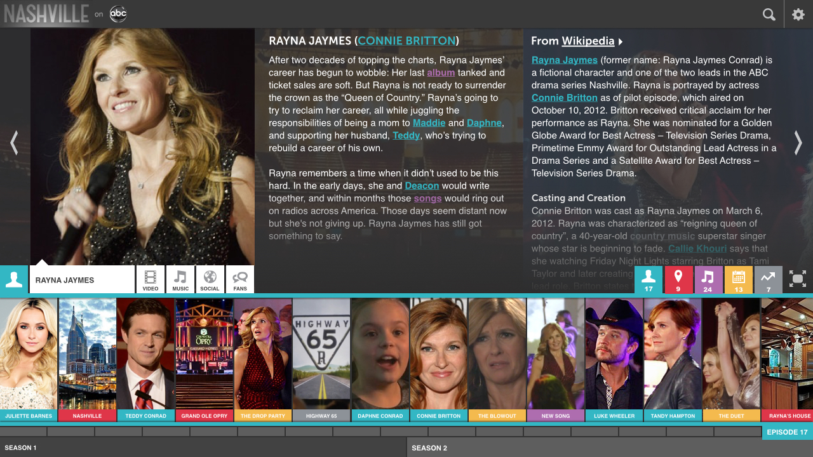
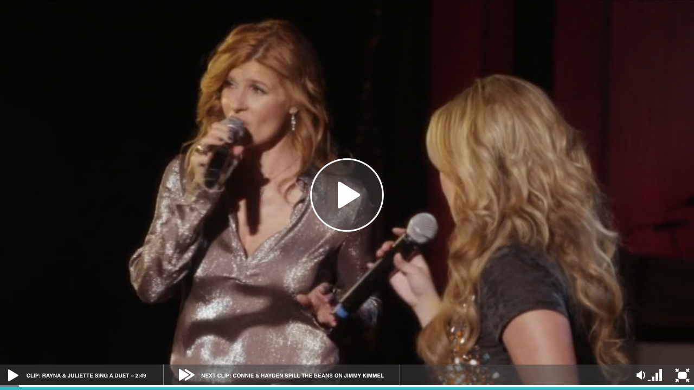
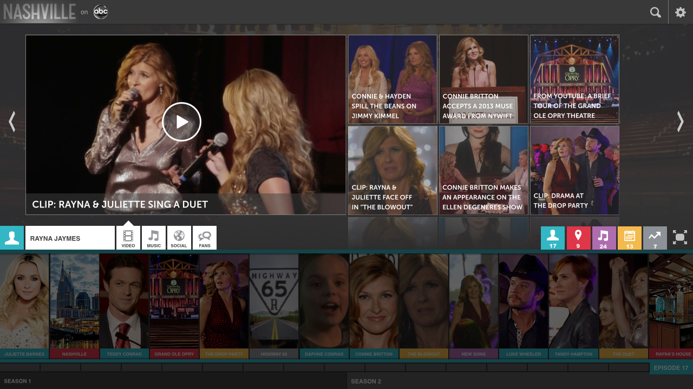
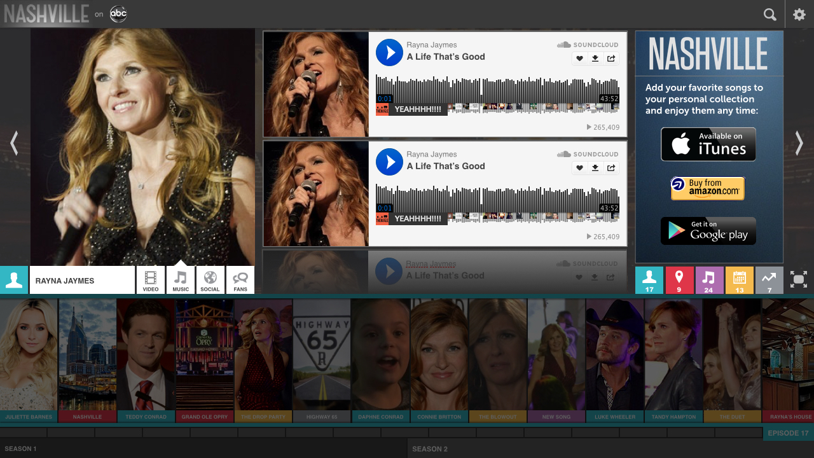
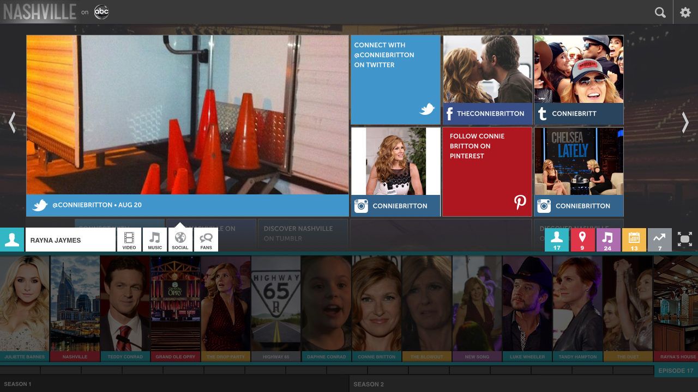

If your computer could watch TV, what would it see?
Early-on, Tagasauris built a best-in-class analysis platform for image content — a computer that could look at, and interpret, photos. When we were contacted by Disney's R&D team, they had a question: Could we do the same for video?
The result is what we call the TV Genome, an A.I. platform for video that watches TV shows and movies, breaks them down into requisite shots & scenes, and documents the key aspects of the storyline (characters, themes, locations, music, product placements, and more).
To what end?
Initially, the TV Genome was created as an internal-facing tool for Disney's content creators — a means to interrogate content with unprecedented precision to gain insights on viewing trends, thematic tendencies, and series-long plotlines.
But we knew it could be so much more...
We designed a video-on-demand application that not only lets you watch your favorite show, but also provides an infinitely explorable, visual-first deep-dive into the drama as it unfolds — episode to episode and season to season. Our application connects the events in the show to real-world locations, actors, social content, and ancillary features that grow over time.
The TV Genome powers that, and so much more.





